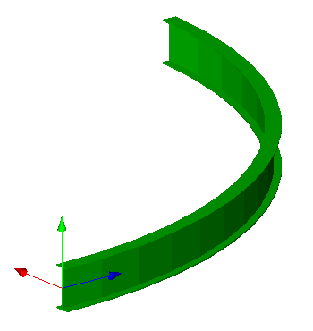

Annex E
(informative)
Examples
E.4.3 - Beam Revolved Solid
Example overview
Additional test cases not yet allocated to individual test case groups.
This example illustrates a beam with revolved solid geometry, based on an parametric I-Shape profile and corresponding material profile set usage definition. Figure E.A shows the resulting shape.

IFC-SPF source
ISO-10303-21;
HEADER;
/* use the correct model view definition for the IFC4 design handover view */
/* ---------------------------------------------------------------------------------------------- */
FILE_DESCRIPTION(('ViewDefinition [DesignTransferView_V1.0]'),'2;1');
FILE_NAME(
/* name */ 'beam-revolved-solid.ifc',
/* time_stamp */ '2014-06-09T14:06:08',
/* author */ ('redacted'),
/* organization */ ('redacted'),
/* preprocessor_version */ 'redacted',
/* originating_system */ 'redacted',
/* authorization */ 'None');
FILE_SCHEMA (('IFC4X3_ADD2'));
ENDSEC;
DATA;
/* IfcOwnerHistory is in scope of the IFC4 reference view required for project */
/* ---------------------------------------------------------------------------------------------- */
#1= IFCAPPLICATION(#2,'redacted','redacted','redacted');
#2= IFCORGANIZATION($,'redacted',$,$,$);
#3= IFCPERSONANDORGANIZATION(#4,#5,$);
#4= IFCPERSON($,'redacted','redacted',$,$,$,$,$);
#5= IFCORGANIZATION($,'redacted',$,$,$);
#6= IFCOWNERHISTORY(#3,#1,$,.ADDED.,1402094752,$,$,1402094752);
/* optionally define recurring instances, such as zero point and main directions */
/* those can be referenced multiple times reducing file sizes */
/* ---------------------------------------------------------------------------------------------- */
#7= IFCCARTESIANPOINT((0.0,0.0,0.0));
#8= IFCDIRECTION((1.0,0.0,0.0));
#9= IFCDIRECTION((0.0,1.0,0.0));
#10= IFCDIRECTION((0.0,0.0,1.0));
#11= IFCAXIS2PLACEMENT3D(#7,#10,#8);
#12= IFCAXIS2PLACEMENT2D(#13,$);
#13= IFCCARTESIANPOINT((0.0,0.0));
/* set the representation context for 3D body, and 2D axis representation */
/* north direction is set to positive y-axis, no geo-spatial coordinates are provided */
/* ---------------------------------------------------------------------------------------------- */
#14= IFCGEOMETRICREPRESENTATIONCONTEXT($,'Model',3,0.00001,#15,#16);
#15= IFCAXIS2PLACEMENT3D(#7,#10,#8);
#16= IFCDIRECTION((0.0,1.0));
#17= IFCGEOMETRICREPRESENTATIONSUBCONTEXT('Axis','Model',*,*,*,*,#14,$,.MODEL_VIEW.,$);
#18= IFCGEOMETRICREPRESENTATIONSUBCONTEXT('Body','Model',*,*,*,*,#14,$,.MODEL_VIEW.,$);
/* set the default units - and the units used for geometric representations */
/* ---------------------------------------------------------------------------------------------- */
#19= IFCSIUNIT(*,.LENGTHUNIT.,$,.METRE.);
#20= IFCSIUNIT(*,.AREAUNIT.,$,.SQUARE_METRE.);
#21= IFCSIUNIT(*,.VOLUMEUNIT.,$,.CUBIC_METRE.);
#22= IFCSIUNIT(*,.PLANEANGLEUNIT.,$,.RADIAN.);
#23= IFCUNITASSIGNMENT((#19,#20,#21,#22));
/* defines the default building (as required as the minimum spatial element) */
/* ---------------------------------------------------------------------------------------------- */
#24= IFCBUILDING('3uvY$5FxrCov51rMJmsbC8',#6,'Grasshopper Building','GH Building',$,#25,$,'GH Building',.ELEMENT.,$,$,$);
#25= IFCLOCALPLACEMENT($,#11);
#26= IFCRELCONTAINEDINSPATIALSTRUCTURE('25sZnrub12qP5H_5APKy0v',#6,'Building','Building Container for Elements',(#70),#24);
/* set the context of the IFC4 exchange file */
/* ---------------------------------------------------------------------------------------------- */
#30= IFCPROJECT('0zEhknNpfA1QzjlUTNMGcN',#6,'Grasshopper Project',$,$,'Grasshopper Project','',(#14),#23);
#31= IFCRELAGGREGATES('2CCag_fEvEbuI7aoleu65c',#6,'Project Container','Project Container for Buildings',#30,(#24));
/* defines the beam beam type with the material profile set as a joint profile definition */
/* ---------------------------------------------------------------------------------------------- */
#61= IFCMATERIAL('S355JR',$,$);
#64= IFCMATERIALPROFILE('IPE600',$,#61,#91,0,$);
#66= IFCMATERIALPROFILESET('IPE600',$,(#64),$);
#67= IFCRELASSOCIATESMATERIAL('3PFUE_ra50QPK6oFLEA8Ou',#6,'MatAssoc','Material Associates',(#68),#66);
#68= IFCBEAMTYPE('2CyAyxh0X9FRePLOg4w1qS',#6,'IPE600',$,$,$,$,$,$,.BEAM.);
#69= IFCRELDEFINESBYTYPE('0a3XGGD6DDjx7w$U90jGcM',#6,'IPE600',$,(#70),#68);
/* defines the beam with revolved solid geometry */
/* the profile set usage indicated the cardinal point */
/* ---------------------------------------------------------------------------------------------- */
#70= IFCBEAM('3v1174zor6w9secwnbuYk1',#6,$,$,$,#73,#90,$,$);
#71= IFCMATERIALPROFILESETUSAGE(#66,5,$);
#72= IFCRELASSOCIATESMATERIAL('09XSzlrVbBaPJrUqRqW_4D',#6,'MatAssoc','Material Associates',(#70),#71);
#73= IFCLOCALPLACEMENT($,#74);
#74= IFCAXIS2PLACEMENT3D(#7,#75,#76);
#75= IFCDIRECTION((0.68965517,0.72413793,0.0));
#76= IFCDIRECTION((-0.72413793,0.68965517,0.0));
/* defines the beam axis representation */
/* ---------------------------------------------------------------------------------------------- */
#77= IFCTRIMMEDCURVE(#83,(IFCPARAMETERVALUE(0.0),#78),(IFCPARAMETERVALUE(1.52202550844946),#79),.T.,.PARAMETER.);
#78= IFCCARTESIANPOINT((0.0,0.0,0.0));
#79= IFCCARTESIANPOINT((6.89655172413793,0.0,7.24137931034483));
#80= IFCAXIS2PLACEMENT3D(#81,#9,#82);
#81= IFCCARTESIANPOINT((7.25,0.0,0.0));
#82= IFCDIRECTION((-1.0,0.0,0.0));
#83= IFCCIRCLE(#80,7.25);
#84= IFCSHAPEREPRESENTATION(#17,'Axis','Curve3D',(#77));
/* defines the beam solid representation as a revolved area solid */
/* ---------------------------------------------------------------------------------------------- */
#85= IFCREVOLVEDAREASOLID(#91,$,#86,1.52202550844946);
#86= IFCAXIS1PLACEMENT(#87,#88);
#87= IFCCARTESIANPOINT((7.25,0.0,0.0));
#88= IFCDIRECTION((0.0,1.0,0.0));
#89= IFCSHAPEREPRESENTATION(#18,'Body','SweptSolid',(#85));
#90= IFCPRODUCTDEFINITIONSHAPE($,$,(#84,#89));
/* defines the beam profile being an I-shape profile IPE600 */
/* ---------------------------------------------------------------------------------------------- */
#91= IFCISHAPEPROFILEDEF(.AREA.,'IPE600',#12,0.22,0.6,0.012,0.019,0.024,$,$);
ENDSEC;
END-ISO-10303-21;